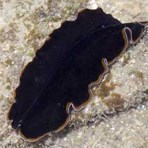
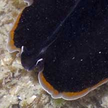
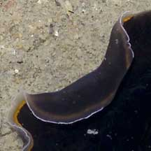
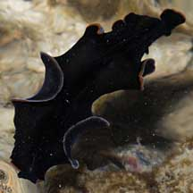
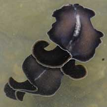
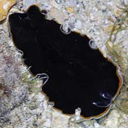
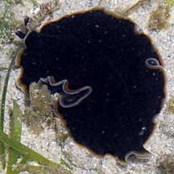

|
|
| flatworms text index | photo index |
|
worms > Phylum Platyhelminthes >
Class
Turbellaria > Order Polycladida
|
| Dawn
flatworm Pseudobiceros hancockanus Family Pseudocerotidae updated Feb 2020 Where seen? This elegant flatworm is commonly seen on coral rubble near living reefs on many of our Southern shores. Like the first light of dawn, the dark to black flatworm has orange and white edges. Previously known as Pseudobiceros uniarborensis. Features: 5-8cm long. Usually with deep ruffles. Body dark brown to black. Margin in three colours: thin white line on the outermost edge, a transparent greyish band in the middle and orange band innermost next to black body. Centre of the body is raised, with a short grey or white stripe on the head. Underside uniformly semi-translucent grey with same marginal markings as the upper side. It has a pair of pseudotentacles that are ear-like and pointed. The pseudotentacles are all black, bordered only by the opaque white rim (no orange) and has conspicuous white tips. |
 St. John's Island, Jan 06 |
 Marginal band: orange, grey, white. Pseudotentacles all black with white tips. Grey or white stripe on the head. |
 Underside uniformly grey semi-translucent. |

|
|
 Pulau Hantu, Sep 08 |
 Tanah Merah, Aug 09 |
| Dawn flatworms on Singapore shores |
On wildsingapore
flickr
|
| Other sightings on Singapore shores |
 Pulau Sudong, Dec 09 |
||
 Pulau Senang, Aug 10 |
| Acknowledgement With grateful thanks to Leslie H. Harris of the Natural History Museum of Los Angeles County for comments on this worm and its identification. Grateful thanks to Rene Ong for sharing details and identifying the flatworms on this page. Links
|